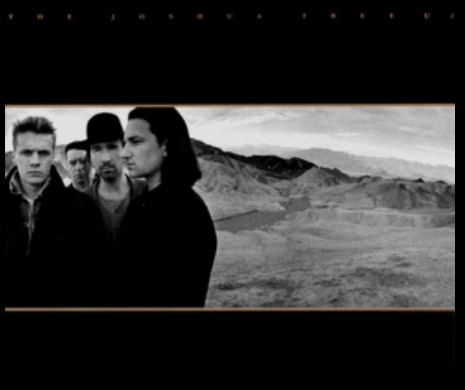

Discographie de U2
Découvrez les albums studio qui ont marqué l'histoire du groupe.

The Joshua Tree
Sortie : 1987
Contient les singles "With or Without You" et "I Still Haven't Found What I'm Looking For".
Achtung Baby
Sortie : 1991
Marque un virage musical vers une sonorité plus alternative. Inclus "One" et "Mysterious Ways".

All That You Can't Leave Behind
Sortie : 2000
Retour aux sources du groupe avec les titres "Beautiful Day" et "Walk On".